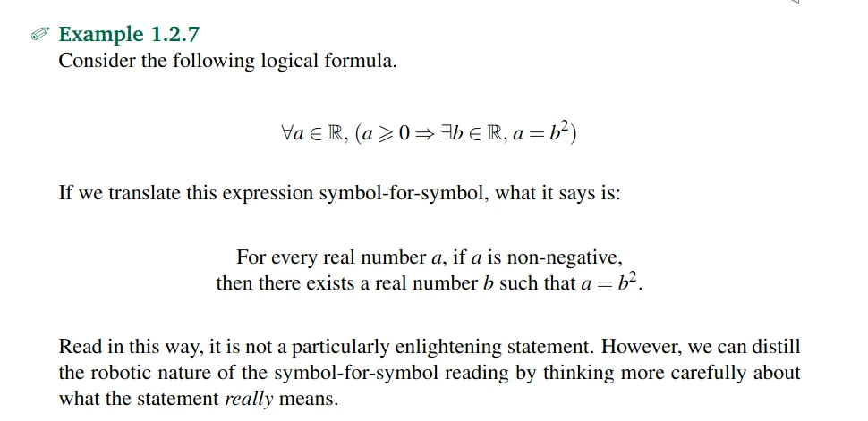

Roni Kobrosly Ph.D.'s Website
written by Roni Kobrosly on 2026-05-14 | tags: engineering personal updates
So you think you're a nerd...
One of the most consistent things I've enjoyed throughout my life is learning. I don't want to sound too grandiose here, but learning (particularly when it's something I know zip about) can almost feel like traveling to a new land. It's confusing, challenging, rewarding, and exciting. I really feel this way. I also get a deep satisfaction from feeling my skills grow and having a sense of "I'm improving myself".
I love learning anything:
- how to make homefries that are super crispy on the outside and pillowy on the inside. FYI, it's washing the potato starch away, cooking them lightly in a microwave, and then frying them in an high-saturated fat oil with a high smoke point (like peanut oil).
- how to play piano or guitar
- how to be a better technical leader
- how to draw a better portrait or do better gesture drawings
- what different sub-fields exist within pure math
- the different approaches for evaluating an agentic AI pipeline
- etc etc ...
Outside of work and family, I've got both technical and non-technical pursuits. My technical hobbies are where I do the bulk of my learning these days, and these pursuits happen in phases (a month working with new framework X, a month making website Y, a couple weeks reading technical book Z, etc.). Generally, are very nerdy. Painfully nerdy. No, no, you misunderstand. Sure everyone these days calls themselves a nerd ("ohh I watch Game of Thrones, I'm such a nerd! 🤓"). But mine are... on another level. Here are the two most recent technical interests I've been pursuing in my free time:
1) I want to learn and become proficient in Rust, the programming language. I'm planning on reading what everyone in the rust community refers to as "the book", then do the Rustlings exercises, and then maybe start making some apps.
2) Ufff, this next one is intense. I want to learn more math. It was always my favorite subject and if I could do it again, I'd major in math in college. So, I'm reading this open source math book: An Infinite Descent into Pure Mathematics. Maybe I'll do some exercises but I think I'll mostly just be reading it and scribbling a few notes.

The harsh inner critic
On evening earlier this week, after putting down my daughter, I thought about doing putting some time to these two projects and then I felt guilt and doubt. I'm a busy adult, probably like you. It feels like I need to be strategic about how I spend my maybe 1-2 hours of free time each day.
- Will learning Rust or reading a math book help me professionally? I'm almost certain it won't. Come to think of it, reading a math book for the fun of it is basically mental masturbation.
- Will it come in handy in my personal life? At best, there's a bit of material in there for sprinkling into a random conversation.
I've been imbibing the corporate, tech product philosophies of "always work towards outcomes", "don't do complex things for the sake of complexity", "it's not the tech that matters, it's solving the problem that matters", etc etc for over a decade in my day job and maybe some of that is bleeding over in my personal projects. I feel guilty for spending time doing this unproductive, directionless stuff.
I have a LinkedIn feed full of people sharing their projects, conference talks, certificates earned, promotions attained... I'm happy for them but there's a lot of pressure and it feels like everything counts in large amounts.
Also, these days I can fire up the latest DeepSeek model (v4 pro, at the time of writing this), and basically have a Rust app written for me. Sure, probably would help to know more about the language, I'm never going to be a pro Rust developer, so is it really worth the 100+ hours of learning?
Permission granted
That evening I spent my time taking a walk and thinking about why I'd want to study Rust or math. I came up with some answers.
Studying this technical stuff is comforting. Please don't misunderstand, I'm not saying I'm some genius and that only top-grade intellectual content satisfies me. I'm saying the process of studying this methodical structured stuff is calming to me, at a time when the world is feeling chaotic. It's self-soothing. And ohhh boy is it chaotic these days:
- I have a three-year-old and I'm trying to learn to be a good father. As it turns out this is pretty damn tough. I love my daughter, and yet everyday is a new challenge and a new way to feel humbled.
- Our country's leadership is unstable and untrustworthy, and it's causing global conflict. This has been obvious to anyone, as long as you haven't been lying to yourself.
- The Western economy feels like it's teetering, and the public's (fading) wonder around AI is the only thing keeping it up.
- My parents are getting older and I worry about them
- You may or may not have noticed, but this thing named AI is all the rage these days. My profession is undergoing a revolution, and we can all feel it on a daily basis. No one knows what things will look like in two years, and I feel like we're all frantically trying to catch the latest updates.
- Inflation is hurting people.
Life is so large and overwhelming and fluffy and indeterminable. I find a lot of comfort in studying math, logic, and engineering. It feels like I'm reading the secret language of the universe, and it's crisp, internally-consistent, explainable, and often it is ones and zeroes. The topics are rarely "easy", but when you do finally understand them, they are as steady and unshakeable as 1+1=2. Goddamn that is comforting.
If I dig a little deeper, studying this stuff also reminds me of a time when things in my life were simpler. I was a good student in high school and I did well academically. It felt like the topics we studied in school all "clicked". Back when I was a teenager, I had an oversized confidence in my abilities. Thankfully, life really humbles the shit out of you. Still, when I think back to that time, there was this strong feeling of "I've got this!" and I can sort of remember it and sit close to it when I study a math book. Very different from the feeling of "I don't got this!" I get when I'm trying to reason with my daughter having a temper tantrum.
There's something else going on here that took me a while to admit. So much of what I do (professionally and as a parent) is in service of others. That's not a complaint, it's just the reality of being a functional adult human. But these nerdy rabbit holes? Nobody asked for them. Nobody benefits from them. Nobody is grading them. They exist entirely because I wanted them to. There's a quiet rebelliousness in that. In a world that wants to optimize everything (your time, your LinkedIn profile, your side projects, etc.) choosing to learn something purely because it delights you feels almost countercultural.
Anyways, I hope some of this jibber jabber connects with you. But you know what, if no one reads this, that's okay. I'm basically writing this out in my softly-lit basement for me. The things we do for no reason other than genuine curiosity are often the things that quietly hold us together. They remind us who we are underneath all our roles and responsibilities. Sometimes, that's reason enough.